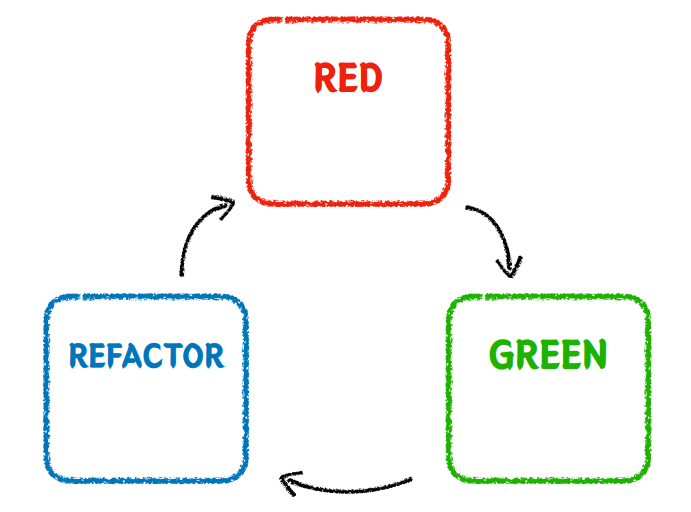
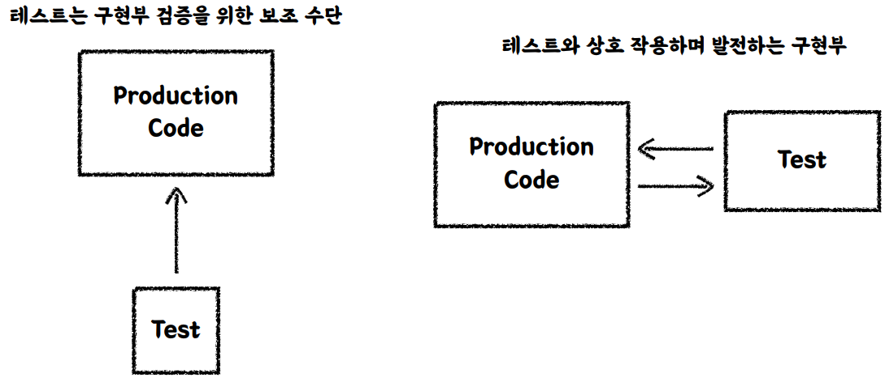

TestDrivenDevelopment
용어 설명
- TDD
프로덕션 코드보다 테스트 코드를 먼저 작성하여 테스트가 구현 과정을 주도하도록 하는 방법론
TDD
{kind=link}

- RED
실패하는 테스트 작성
실패한 테스트를 작성하는게 아니라, 프로덕션 코드없이 테스트를 먼저 작성하기 때문에 결과가 실패가 나오도록 합니다.- GREEN
테스트 통과 최소한의 코딩
빠른 시간 내에 테스트를 통과하도록 코딩 초록불을 위해서라면 엉터리라도 코드를 짜도 된다.
최소한의 코딩만 코딩- REFACTOR
구현 코드 개선 , 테스트 통과 유지 초록불을 유지하면서 구현 코드를 개선하는 것.
코드 예시
장바구니에 담긴 음료들의 총 금액을 구하는 비즈니스 로직
TDD RED - 1단계
비즈니스 로직 메서드를 먼저 작성합니다.
최소한 컴파일이 될 수 있도록 매서드를 만듭니다.
결과는 실패합니다
TDD GREEN - 2단계
빠른 시간내에 테스트 코드를 통과하도록 비즈니스 코드를 수정합니다.
TDD REFACTOR - 3단계
초록불을 유지한 채로 리팩토링을 수행하여 비즈니스 코드를 수정합니다.
핵심 가치
피드백 이라는건 내가 작성한 코드에 대해서 자주 , 빠르게 피드백을 받을수 있다.
선 기능 구현 , 후 테스트 작성
- 테스트 자체의 누락 가능성
이미 기능을 만들고 시간이 없어서 테스트가 중요한건 알지만 시간,물리제약으로 기능만 두고 넘어간다.
- 특정 테스트 케이스만 검증할 가능성 ⇒ 해피케이스
기능을 구현하고 기능이 올바르게 작동하는 테스트 방법만 테스트하게 된다. 사고방식이 이미 거기에 갖혀있기 때문이다. 해피케이스를 생각하면서 구현하기 때문에 기능에서 정상동작하지 않는 경우(예외케이스)에 대한 검증이 누락 될 수있다.
- 잘못된 구현을 다소 늦게 발견할 가능성
테스트 자체가 뒤늦게 만들어지다보니 기능 구현 직후에 테스트 코드를 작성하지 않을 수 있습니다. 나중에 짜다 보면 기능이 잘못 만들어진 경우 그때가서 발견을 하거나 그외 문제가 발생할 수 있습니다.
선 테스트 작성 , 후 기능 구현
- 복잡도가 낮은, 테스트가 가능한 코드로 구현할 수 있게 한다.
ex) createOrder(시간제약) LocalDateNow()때문에 테스트하기가 어려웠다.
그래서 매개변수로 시간을 받아서 테스트를 진행했다. 구현부 부터 작성하고 테스트를 작성하면, LocalDateTime.now()를 외부로 빼는 생각이나, 테스트 작성 자체를 테스트하기가 어려워질수도 있다. 테스트부터 작성하다면, 테스트를 작성하기 위해 만든 구현부가 되기 때문에 처음부터 테스트가 작성하기 쉽게 작성이 된다.- 쉽게 발견하기 어려운 엣지(Edge)케이스를 놓치지 않게 해준다.
해피케이스 위주로 경계 케이스를 발견할수 있게 해준다.
- 구현에 대한 빠른 피드백을 받을 수 있다.
테스트에대한 결과를 바로 알수 있기 때문입니다.
- 과감한 리팩토링이 가능해진다.
구현부를 처음부터 작성해도 테스트가 작성되어잇어 부담이 없다.
TDD: 관점의 변화

- 기존 테스트 코드
비즈니스 로직의 구현부가 제일 중요하고, 테스트 코드는 보조 수단으로 생각하여 중요도가 떨어지는 형태로 작성합니다.
- TDD 테스트코드
프로덕션 코드와 테스트 코드가 기능을 구현하기위해 상호작용을 하며 발전하며 견고해집니다. 테스트의 중요도가 기존 테스트 코드보다 올라간 형태입니다.
키오스크를 사용자(클라이언트) → 메서드를 호출하면서 피드백이 가능합니다.
실제 사용 단계까지 가기 이전에 테스트 코드에서 클라이언트 입장에서 메서드를 호출하면서 결과에 대한 피드백을 줄 수 있습니다.
정리
TDD가 익숙하지 않은 경우 익숙할 때까지 계속 시도를 해야합니다. TDD는 만능이 아니기 때문에 적절한 상황에 TDD를 사용할 수 있어야하는데 능숙하게 TDD를 다룰줄 알아야 적절한 상황에 TDD를 사용할 수 있습니다.